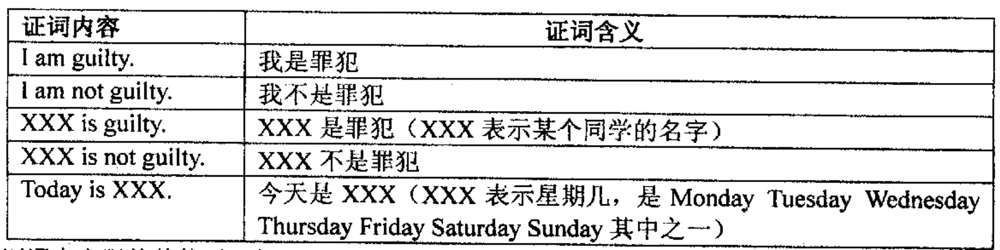

明明同学最近迷上了侦探漫画《柯南》并沉醉于推理游戏之中，于是他召集了一群同学玩推理游戏。游戏的内容是这样的，明明的同学们先商量好由其中的一个人充当罪犯（在明明不知情的情况下），明明的任务就是找出这个罪犯。接着，明明逐个询问每一个同学，被询问者可能会说：

证词中出现的其他话，都不列入逻辑推理的内容。
明明所知道的是，他的同学中有 $N$ 个人始终说假话，其余的人始终说真。
现在，明明需要你帮助他从他同学的话中推断出谁是真正的凶手，请记住，凶手只有一个！
输入由若干行组成，第一行有两个整数，$M（1≤M≤20）、N（1≤N≤M）$和$P（1≤P≤100）$；$M$ 是参加游戏的明明的同学数，$N$ 是其中始终说谎的人数，$P$ 是证言的总数。接下来 $M$ 行，每行是明明的一个同学的名字（英文字母组成，没有主格，全部大写）。
往后有 $P$ 行，每行开始是某个同学的名宇，紧跟着一个冒号和一个空格，后面是一句证词，符合前表中所列格式。证词每行不会超过 250 个字符。
输入中不会出现连续的两个空格，而且每行开头和结尾也没有空格。
如果你的程序能确定谁是罪犯，则输出他的名字；如果程序判断出不止一个人可能是罪犯，则输出 Cannot Determine；如果程序判断出没有人可能成为罪犯，则输出 Impossible。
3 1 5 MIKE CHARLES KATE MIKE:I am guilty. MIKE:Today is Sunday. CHARLES:MIKE is guilty． KATE:I am guilty. KATE:How are you??
MIKE
 Comet OJ
Comet OJ